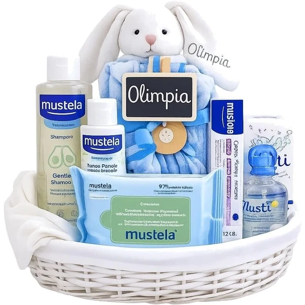
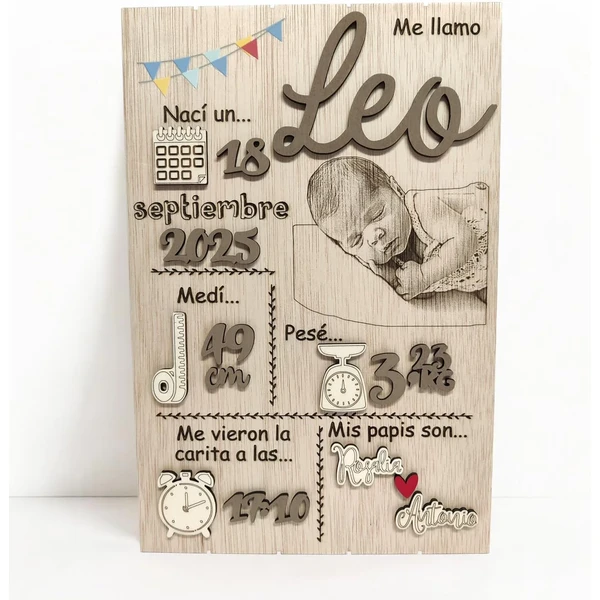
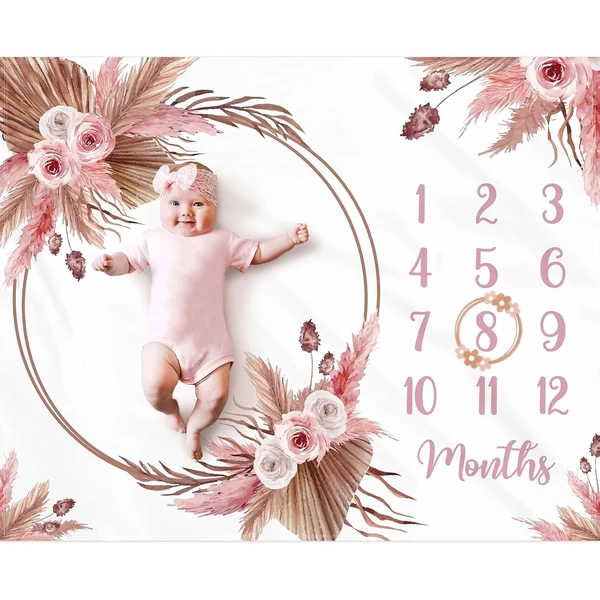
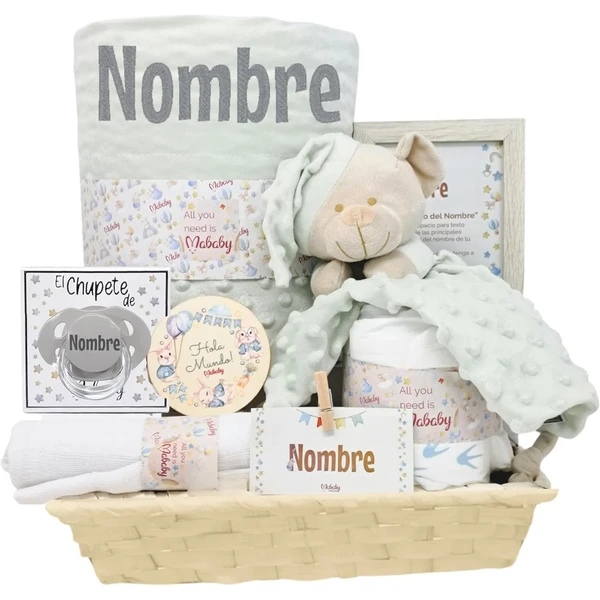
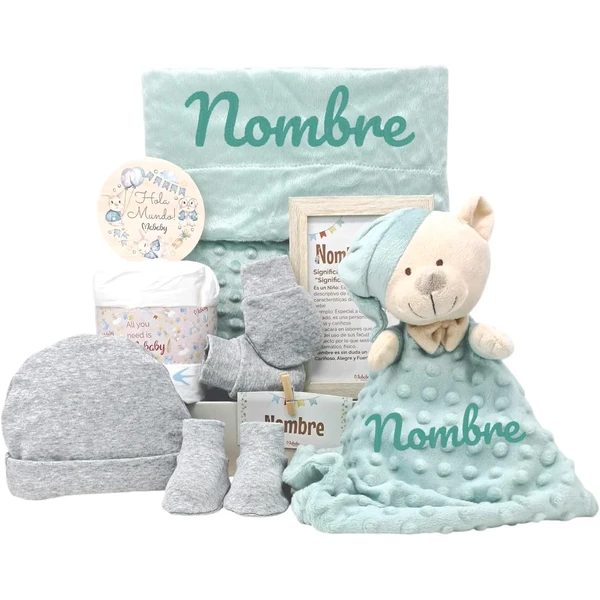
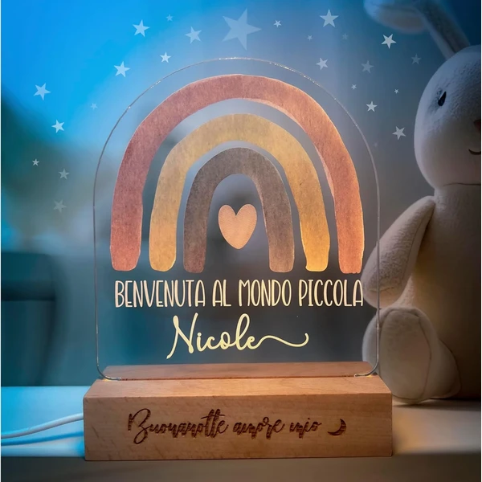
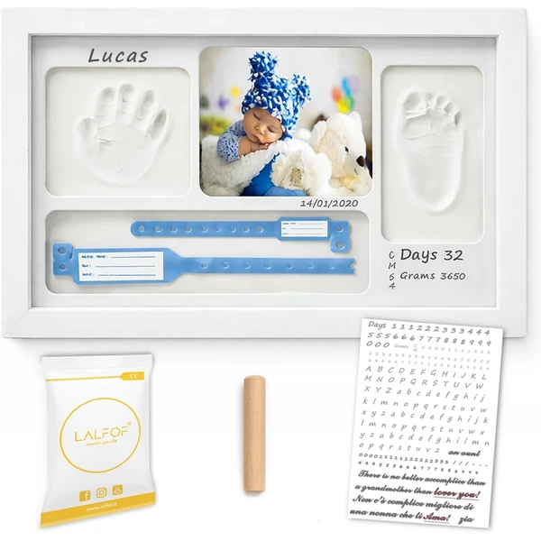
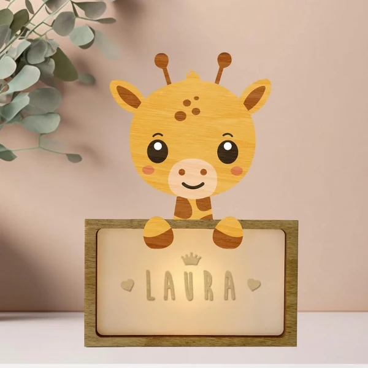
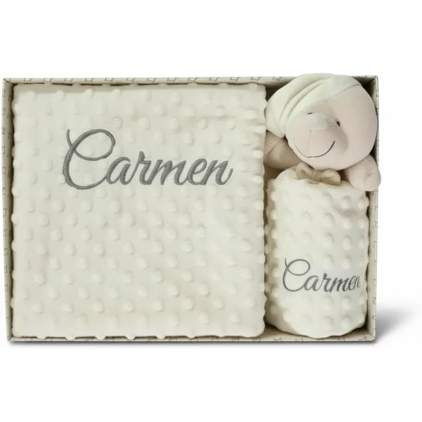

Canastilla personalizada Musti Estrellas
Un set de regalo de nacimiento personalizable con el nombre del bebé, presentado en una cesta de mimbre. Incluye colonia, crema, toallitas, champú y un doudou con sonajero.
⭐ ¿Por qué nos gusta?
- ✔ Personalizable con el nombre del bebé.
- ✔ Incluye productos de cuidado y un doudou sonajero.
- ✔ Presentación cuidada en cesta de mimbre.
💬 Lo que más destacan las familias
Una de las cosas más comentadas es lo especial que resulta ver el nombre del bebé bordado nada más abrir la cesta. El doudou con sonajero también se lleva buenas críticas, porque suele convertirse en uno de los primeros objetos de apego.
Ver en Amazon

Natalicio personalizado de madera
Una placa de madera personalizada con el nombre, la fecha, el peso y la medida del bebé, hecha a mano y pintada con distintos diseños a elegir. Pensada para decorar la habitación y guardar el recuerdo del nacimiento.
⭐ ¿Por qué nos gusta?
- ✔ Personalizado con nombre, fecha, peso y medida.
- ✔ Hecho a mano en madera con acabados seguros.
- ✔ Disponible en varios diseños de animales.
💬 Lo que más destacan las familias
Muchos padres coinciden en que es de esos detalles que se acaban colgando en la habitación para siempre, no solo para el día del nacimiento. También gusta que cada dato quede reflejado con cuidado, sin resultar recargado.
Ver en Amazon

Manta de hitos mensuales bohemia
Una manta con un marco floral de fieltro para fotografiar al bebé cada mes durante su primer año. Confeccionada en forro polar suave, sirve también como manta de juego o decoración de la habitación.
⭐ ¿Por qué nos gusta?
- ✔ Marco floral para marcar cada mes del bebé.
- ✔ Forro polar suave y denso.
- ✔ Tamaño amplio, también útil como manta de juego.
💬 Lo que más destacan las familias
Los compradores valoran especialmente lo bien que queda en las fotos mes a mes, con un resultado mucho más cuidado que improvisar un cartel casero. También se comenta que el forro polar es lo bastante suave y grueso para usarla luego como manta de juego.
Ver en Amazon

Cesta personalizada Menta con doudou y chupete
Una cesta de regalo con manta bordada con el nombre del bebé, un doudou de osito, un chupete personalizado y una gasa de muselina. Incluye también un pastel de pañales y un marco con el significado del nombre.
⭐ ¿Por qué nos gusta?
- ✔ Manta y chupete personalizados con el nombre.
- ✔ Incluye doudou de apego y gasa de muselina.
- ✔ Presentación completa lista para regalar.
💬 Lo que más destacan las familias
Entre los comentarios más habituales aparece que reúne tantos detalles personalizados que da la sensación de un regalo mucho más elaborado de lo normal. El doudou también gusta especialmente, porque suele quedarse como su peluche de referencia.
Ver en Amazon

Canastilla personalizada Velvet unisex
Una canastilla unisex con manta personalizada, un doudou de apego y un set de primera puesta (gorro, manoplas y patucos). Incluye también un mini pastel de pañales y un marco con dedicatoria personalizada.
⭐ ¿Por qué nos gusta?
- ✔ Manta y marco personalizados con dedicatoria.
- ✔ Incluye set completo de primera puesta.
- ✔ Presentación decorada, lista para entregar.
💬 Lo que más destacan las familias
Se repite bastante el comentario de que resulta un regalo muy completo, con ropa y detalles personalizados en un mismo pack, sin tener que combinar varias compras. El marco con dedicatoria también se menciona como un plus frente a otras canastillas similares.
Ver en Amazon

Lámpara nocturna personalizada con nombre
Una lámpara de noche con el nombre del bebé grabado, disponible en varios diseños de animales y con hasta siete niveles de intensidad de luz. Pensada para acompañar las tomas nocturnas y los cambios de pañal sin luz brusca.
⭐ ¿Por qué nos gusta?
- ✔ Personalizable con el nombre del bebé.
- ✔ Siete intensidades de luz cálida regulable.
- ✔ Base de madera y materiales certificados.
💬 Lo que más destacan las familias
Quienes la han probado destacan que la luz cálida ayuda mucho durante las tomas nocturnas, sin despertar del todo al bebé. El nombre grabado también gusta como detalle que hace que la lámpara no sea un objeto genérico más en la habitación.
Ver en Amazon

Marco de huellas personalizado Lalfof
Un kit completo para crear la huella de la mano o el pie del bebé en arcilla, con un marco personalizable con el nombre y la fecha de nacimiento. Incluye también un porta-objetos para guardar el chupete o la pulsera del hospital.
⭐ ¿Por qué nos gusta?
- ✔ Incluye todo el kit: marco, arcilla y letras adhesivas.
- ✔ Arcilla testada dermatológicamente.
- ✔ Porta-objetos para guardar recuerdos del nacimiento.
💬 Lo que más destacan las familias
Un detalle que aparece una y otra vez es lo fácil que resulta hacer la huella, aunque sea la primera vez que se usa este tipo de kit. El porta-objetos también se valora, porque permite guardar el chupete o la pulsera del hospital junto al recuerdo.
Ver en Amazon

Lámpara quitamiedos personalizable jirafa
Una lámpara de noche con forma de jirafa, fabricada en madera y personalizable en casa con un kit de letras incluido. Funciona con pilas o con cable USB-C y ofrece una luz suave para calmar al bebé en la oscuridad.
⭐ ¿Por qué nos gusta?
- ✔ Se personaliza en casa con el kit de letras incluido.
- ✔ Funciona con pilas o USB-C.
- ✔ Fabricada en España con materiales ecológicos.
💬 Lo que más destacan las familias
No es raro encontrar comentarios sobre lo entretenido que resulta personalizarla en casa, casi como una pequeña manualidad en familia. También se comenta que la luz es lo bastante suave como para dejarla encendida toda la noche sin molestar.
Ver en Amazon

Set manta y doudou personalizado Danielstore
Un conjunto de manta y doudou con el nombre del bebé bordado a mano, confeccionados en microfibra suave y tejido aterciopelado. Pensado para usar en la cuna, el capazo o durante los paseos.
⭐ ¿Por qué nos gusta?
- ✔ Nombre bordado a mano en manta y doudou.
- ✔ Manta de doble cara en microfibra transpirable.
- ✔ Tamaño práctico para casa y paseo.
💬 Lo que más destacan las familias
Entre las familias que lo tienen se comenta que el bordado se nota hecho a mano, con un acabado mucho más cuidado que otros modelos estampados. La manta de doble cara también gusta porque sirve igual de bien en la cuna que durante los paseos.
Ver en Amazon